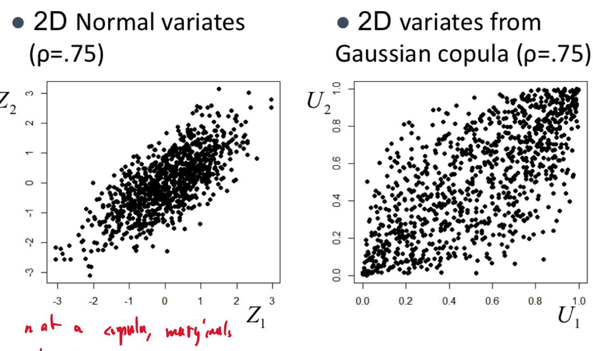
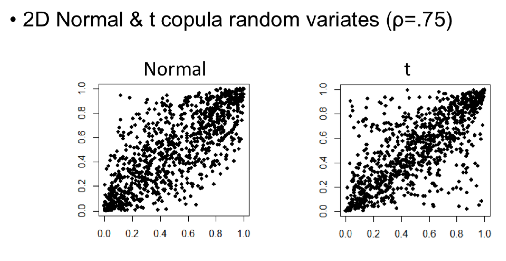
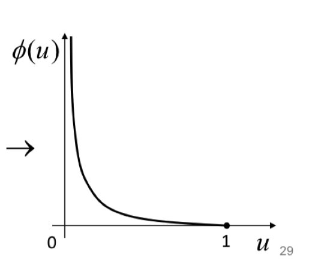
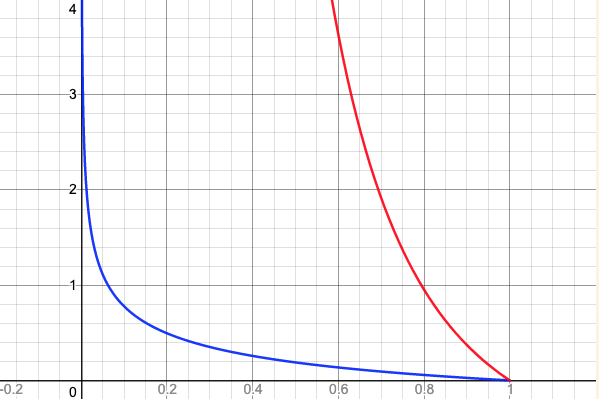
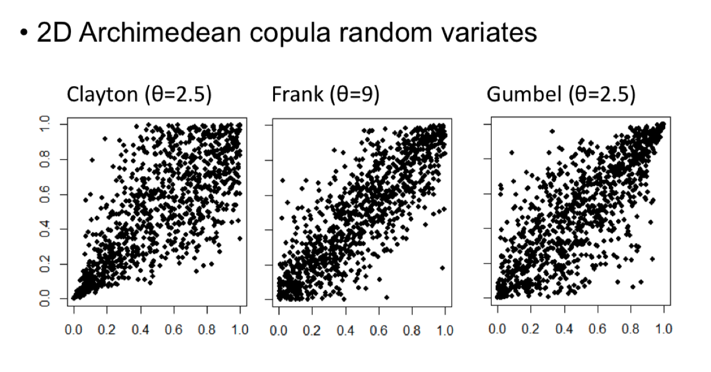
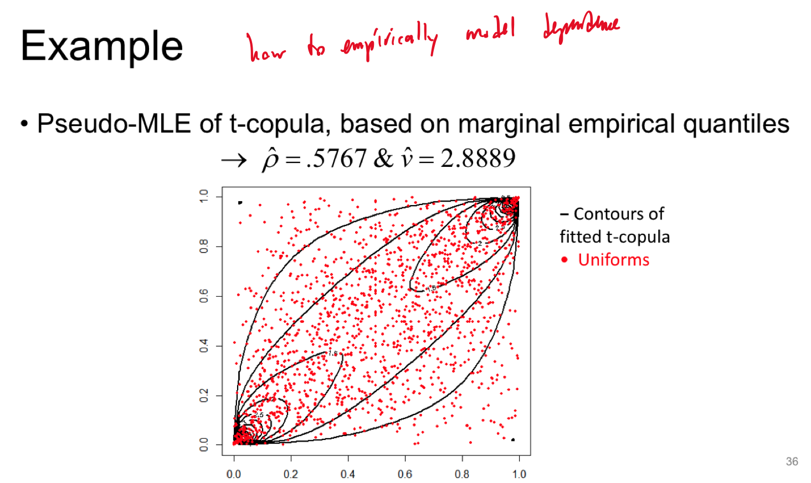

Chapter 6 Copulas
A more flexible way of modelling dependencies of RVs is using copulas.
Definition: A copula (C) is a multivariate CDF with Uniform(0,1) marginals
\[ \begin{aligned} C(u_{1}, u_{2}, \dots u_{d}) &=P(u_{1}, u_{2}, \dots u_{d}) \in [0,1], \quad \forall \ u_{1},\dots u_{d} \in [0,1]\\ \\ &\text{Where }\begin{cases} C(0,0, \ldots, 0)=0 \\ C(1,1, \ldots, 1)=1 \\ C\left(\ldots, u_{i-1}, 0, u_{i+1}, \ldots\right)=0 \\ C\left(1, \ldots, 1, u_i, 1, \ldots, 1\right)=u_i \end{cases} \end{aligned} \] Third case: The cumulative probability of one RV being less than or equal to 0 regardless of what the other RVs are in a copula is 0. Fourth case: The cumulative probability that the other RVs have values less than 1 is 1 but the \(i^{th}\) RV is \(u_{i}\) is simply \(u_{i}\)
6.1 The independence copula
Definition: \(C_{indep} (u_{1}, \dots u_{d}) = u_{1} \times \dots \times u_{d}\)
By the Frechet-Hoeffding theorem, any/every copula is bounded by
\[ \begin{aligned} & \underline{C}\left(u_1, \ldots, u_d\right) \leq C\left(u_1, \ldots, u_d\right) \leq \bar{C}\left(u_1, \ldots, u_d\right) \\ & \text { where } \begin{cases} \underline{C}\left(u_1, \ldots, u_d\right)=\max \left\{1-d+\sum_{i=1}^d u_i, 0\right\} = \max\left\{ 1 - \left(\sum^d_{i=1} 1 - u_{i}\right),0 \right\} \\ \bar{C}\left(u_1, \ldots, u_d\right)=\min \left\{u_1, \ldots, u_d\right\} \end{cases} \end{aligned} \] \(\max \left\{1-d+\sum_{i=1}^d u_i, 0\right\}\) is 1 minus number of uniforms plus the values of the uniforms
- (if \(\mathbf{d=5}, u_{1}=.5,u_{2}=.4,u_{3}=.7,u_{4}=.2,u_{5}=.6\)
- then \(\max(1-5+2.4 = \mathbf{-1.6},0)\) )
- This implies the maximum of the Copula is bounded by 0, or higher if the average value of the uniforms are \(\geq\frac{d-1}{d}\).
\(\min \left\{u_1, \ldots, u_d\right\}\) implies the max of the Copula is bounded by the smallest marginal probability, which makes sense as that is the only one limiting the cumulative probability.

6.2 Sklar’s Theorem
Any continuous multivariate CDF \(F(x_{1}, \dots x_{d})\) with marginal (1D) CDF’s \(F_{i}(x_{i}) \ \forall \ i=1,\dots,d\) can be expressed in terms of a copula \(C\), as \[ F(x_{1},\dots x_{d}) = C(F_{1}(x_{1}), \dots, F_{d}(x_{d})) \]
Inverse is also true, where any copula combined with marginal CDF’s can give a multivariate CDF.
- Copula’s model dependence separately from the marginal distributions of the RVs
If \(X \sim F \implies F(x) \sim Unif(0,1) \implies F^{-1}(Unif) \sim F\) If an RV follows some CDF \(F\), then …
If you take a copula of a bunch of marginal CDF’s, you can obtain the multivariate CDF of all the marginals. The inverse is true, where you can take a multivariate CDF and come up with a copula to represent the dependency between the marginal distributions, and the marginal distributions themselves. (I think is what this is saying.)
6.2.1 Example
For a continuous CDF \(F(x_{1},\dots,x_{d})\) with marginals \(F_{i}(x_{i})\), the copula is given by: \[ \begin{aligned} C(F_{1}(x_{1}),\dots,F_{d}(F_{d})) &= F(x_{1},\dots,x_{d}) \ \text{by Sklar's Thm}\\ \\ \text{Let } u_{i}= F_{i}(x_{i}) &\implies x_{i} = F_{i}^{-1}(u_{i})\\ \end{aligned} \] \[ \therefore \mathbf{C(u_{1},\dots,u_{d}) = F(F_{1}^{-1}(u_{1}),\dots,F_{d}^{-1}(u_{d}))}\\ \]
6.3 Gaussian Copula
We can also construct copula’s of non uniform distributions, such as this multivariate Normal CDF:
\[ \text{Let } \mathbf{X}\sim N_{d}(\boldsymbol{\mu}, \boldsymbol{\Sigma}) \quad \text{with Correlation Mat} \ \boldsymbol{\rho}\\ \] We can find the copula \(C_{p}\) of \(\mathbf{X}\) using: \[ C_{p}(u_{1},\dots u_{d}) = \Phi_{\boldsymbol{\mu},\boldsymbol{\Sigma}}(\Phi_{\mu_{1},\sigma_{1}^{2}}^{-1}(u_{1}), \dots, \Phi_{u_{d},\sigma_{d}^{2}}^{-1}(u_{d})) \] For multivariate distributions that have a Gaussian Copula are called meta-Gaussian distributions. These distributions themselves do not need to be Gaussian.

The second plot would be flat/uniform if the two independent distributions were not correlated (\(\rho=0\)). This plot shows that the probability of both being \(1\) or \(0\) is very high, but the probability that one is \(1\) and the other is \(0\) is virtually 0. This supports our goal of modelling distributions where extreme values occur together.
6.4 Creating Copula’s from Multivariate Distributions
We can create Copula’s from known multivariate Distributions such as the Normal or t distributions.
We copy the dependence structure of known distributions (allowing us to use different marginals for modelling)
Copula from multivariate Normal CDF with correlation matrix \(\boldsymbol{\rho}\) \[ \begin{aligned} C_{\rho}(u_{1},\dots ,u_{d}) &= \Phi_{\boldsymbol{\rho}}(\Phi ^{-1}(u_{1}), \dots, \Phi ^{-1}(u_{d}))\\ \end{aligned} \] \[ \begin{aligned} \text{Where } & \begin{cases} \Phi_{\rho} \text{ is multivariate Normal CDF with correlation } \boldsymbol{\rho} \\ \\ \Phi \text{ is Standard univariate Normal CDF} \end{cases} \end{aligned} \] ## Simulating from a Copula Simulating from a distribution with a copula (dependence between marginals) and marginals themselves can be done with the following steps:
- Generate (dependent) uniforms from the copula:
- \[ (U_{1},\dots U_{d}) \sim C \]
- This is done by generating from a multivariate normal with correlation \(\boldsymbol{\rho}\) \[ \mathbf{Z} = \left[ \begin{array}{l} Z_{1} \\ \vdots \\ Z_{d} \end{array} \right] \sim N_{d}(0,\boldsymbol{\rho}) \]
- Calculate uniforms as their marginal CDF’s (value of uniform var is a probability \(P(Z \leq Z_{i})\))
- \[ U_{i}=\Phi(Z_{i}), \ i=1,\dots,d \]
- Then we can use the uniforms with any other marginal
- This is a very involved process, that we don’t need to go into
- Generate target variates from marginals, using the inverse CDF method
- \[ X_{i} = F_{i}^{-1}(U_{i}) \ \forall \ i \]
It’s difficult for simulating uniforms from multivariate copula.
Simulating from just the 2D Multivariate normal with a correlation of 75% compared to simulating from the Gaussian Copula with the same correlation between variables.
6.4.1 Copula example plots

We can use two different marginals (\(\chi^{2}\) in this case), which are meta-Gaussian as they have a gaussian copula.

Here we see the simulated copula values for different correlation values.

We can also see the differences between a Copula created using Normal and t distributions

The Normal copula shows \(u_{1},u_{2}\) are independent with 0 correlation as there is equal probability any value is sampled from \(u_{1}\) and any value of \(u_{2}\).
On the right, the t copula shows that values on the borders (\(u_{1}=0 \mid\mid u_{2} =0\)) drop to probability 0, and at the extreme values, jump very high.
Peaks at extreme combinations \(\to\) manifestation of tail dependence.

6.5 Elliptical Copulas
The Normal and t distributions have a specific type of dependence: elliptical dependence.
The ellipses describe the contours of the multivariate Normal and t distributions:


The ellipses are determined by the covariance matrix of the distributions. This implies a symmetry in the dependency structure, where the strength is the same for positively and negatively correlated variables.
6.6 Archimedean Copulas
A Family of copula’s whose form is given by \[ C(u_{1},\dots,u_{d}) = \phi ^{-1}[\phi(u_{1})+\dots+\phi(u_{d})] \] Where \(\phi\):
- is a continuous convex generator function
- maps from \([0,1] \to [0,\infty]\)
- \(\phi(0)=\infty, \phi(1)=0\)

This is just an example of a possible \(\phi\)
There are infinitely many \(\phi\) but some popular choices for \(\phi\) are:
| Name | Generator \(\phi(t)\) | Generator Inverse \(\phi ^{-1}(t)\) | Parameter |
|---|---|---|---|
| Clayton | \(t^{-\theta}-1\) | \((1+s)^{-1/\theta}\) | \(\theta\geq 0\) |
| Frank | \(-\ln \frac{e^{-\theta t}-1}{\theta^{-\theta}-1}\) | \(-\frac{1}{\alpha}\ln(1+e^{-s}(e^{-\theta}-1))\) | \(\theta\geq 0\) |
| Gumbel | \((-\ln t)^{\theta}\) | \(\exp\{-s ^{-1/\theta}\}\) | \(\theta\geq 1\) |
\(\theta\) seems to represent how extreme the function varies between its domain, with larger \(\theta\)’s implying larger values throughout the domain.
For example, the Clayton generator with \(\theta=0.25\) in blue, and \(\theta=3\) in red.
bottom=-0.2;top=4;
right=1.2;left=-0.2;
---
y=1/x^{0.25}-1|0<=x<=1|blue
y=1/x^{3}-1|0<=x<=1|red
Samples from the Archimedean copula’s:

The dependency contours of each type of archimedean copula’s base distribution covariance

This plot shows that we can use Archimedean copula’s to model asymmetric dependencies, but suffer limitation in \(\geq\) 3 dimensions.
The Archimedean Copula’s value is constant for any permutation of coordinates \(u_{1}, \dots, u_{d}\) \[ \begin{aligned} C(u_{1}, u_{2}, \dots, u_{d}) &= \phi ^{-1}(\phi(u_{1})+\phi(u_{\mathbf{2}})+\dots+\phi(u_{\mathbf{d}}))\\ &= \phi ^{-1}(\phi(u_{1})+\phi(u_{\mathbf{d}})+\dots+\phi(u_{\mathbf{2}}))\\ \end{aligned} \]
All pairs of coordinates(variables) have the same dependence, which is not the case for elliptical copulas.
There exist copulas that can both model asymmetric dependencies, and differences in pairwise dependence called vine copula’s.
6.7 Fitting Copula’s
Given a copula and marginal distributions, the MLE method can be applied to fit multivariate distribution parameters to sample data. This could however lead to a very high number of parameters.
Instead, pseudo-MLE could be used to break down the problem into the marginals and copula. \[ \begin{aligned} U_{i}^{(j)} = \hat{F}_{j}(X_{i}^{(j)}) \quad \forall \ i, \dots,n \ j = 1, \dots, d \end{aligned} \]
Each \(n\) uniforms in \(d\) dimensions of the copula can be created from the actual multivariate distribution. Alternatively, the empirical CDF could be used to obtain the uniforms.
We can then estimate the copula using MLE on the uniforms.

Guess: The uniforms are created by plugging in each asset return into their own marginal CDF.

The pseudo-MLE can give the uniform marginals used to construct/fit a t-copula.